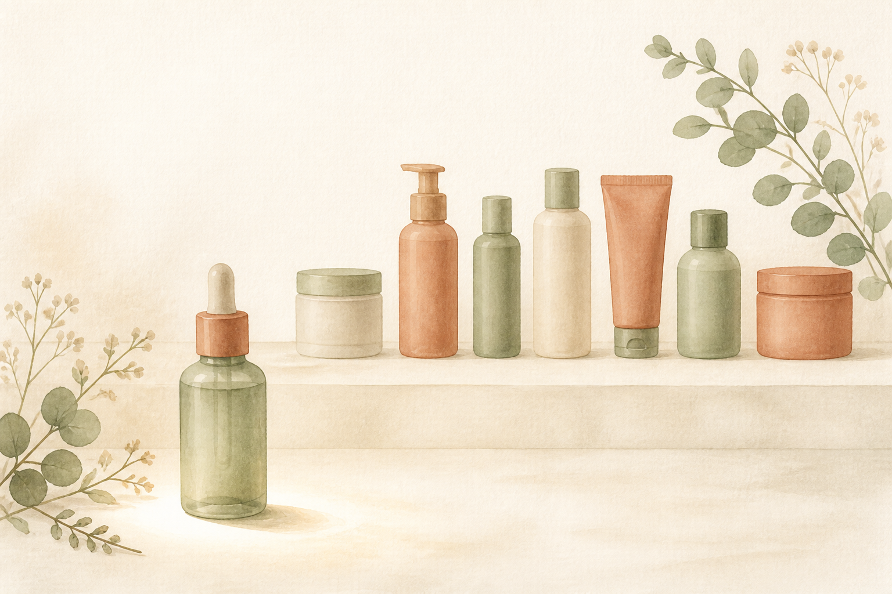
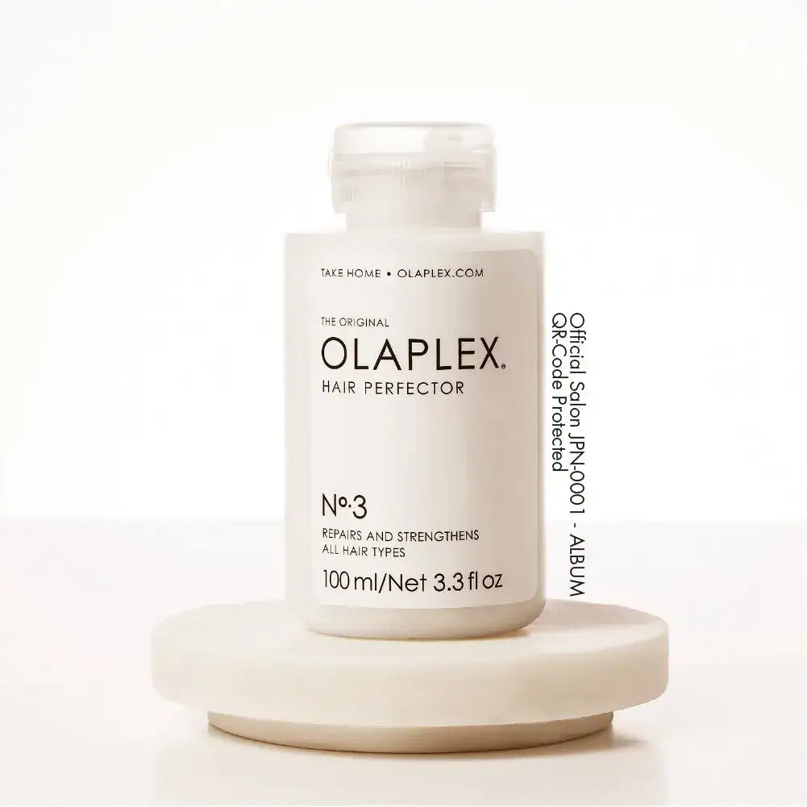

EMPATHY
こんな「お風呂に入ってからが、ケアの始まりだと思っている」、心当たりありませんか。
- 髪のケアはシャンプーから始まるものだと、疑ったことがない
- お風呂に入る前の自分が、髪に対して何かをした記憶がまったくない
- 洗い流さないトリートメントは持っているのに、「洗う前に塗るもの」は1本も持っていない
- 商品名の番号(No.3、No.6など)を、ただの型番だと思って読み飛ばしてきた
- いいアイテムを何本も揃えたのに、「まだ何か足りない気がする」が消えない
- ダメージケアの話になると、いつも「どれを買うか」から考え始めてしまう
- 自分がケアのどの工程に立っているのか、説明しろと言われたら答えられない
一つでも頷いたなら、あと3分だけ読み進めてほしいんです。
私はこのシリーズで、7回かけてアイテムを揃えてきました。第2弾で毎日のシャンプーを変え、第1弾で洗い流さないトリートメントを足し、第3弾で仕上げのバームを加え、第4弾で週数回の集中ケアを挟み、第5弾で香りを乗せ、第6弾で頭皮まで下り、第7弾でそれを届ける道具を持ちました。合計¥36,246。7本並べて、正直「よくここまで来た」と思っていました。
ところが、第8弾を選ぶために7本を机に並べたとき、また妙なことに気づいてしまったんです。
7本とも、お風呂に入ってから使うものでした。洗う、洗った後に足す、乾かす前に整える、頭皮に入れる、それをブラシで届ける。全部、浴室のドアを開けてからの話です。
じゃあ、ドアを開ける前は?──何もしていませんでした。7回ぶん、ゼロです。
もっと言うと、私が1本目に選んだのは「オラプレックス No.6」でした。当時の私は、この「6」を単なる商品名だと思っていたんです。でも番号があるということは、他の番号もあるということで。調べ直したら、No.3は「シャンプー前」に使うものでした。つまり私は、1本目の時点で工程を1つ飛ばして、その先から入っていたことになります。
順番を間違えたまま、7本進んでいた。──足りなかったのは8本目の新しい何かじゃなくて、1本目より手前にあった工程のほうだったのかもしれない、と思いました。

IF NOTHING CHANGES
正直に言うと、いちばん怖いのは「工程を1つ飛ばしていること」そのものじゃありません。
飛ばしたまま、¥36,246ぶんの"答え合わせ"をしてしまうことです。
考えてみてください。前提の工程が抜けている状態で「思ったより変わらないな」と感じたら、人はどう結論づけるでしょうか。だいたい、こうです。──「この商品、私には合わなかったかも」。
商品を疑うんです。順番を疑わずに。
そして次に何をするかというと、8本目を探しに行く。もっといい成分、もっと評価の高いブランド、もっと高い1本。7本目までの工程がまだ埋まっていないのに、8本目の比較記事を読み始めるんです。
私はこれを、市販品ジプシーだった頃に何十回とやってきました。第7弾では、"ジプシー"の正体は「実行を変えないまま、商品だけ変え続けること」だと書きました。今回もう一段わかったのは、その手前があったということです。──そもそも、自分が立っている工程を知らないまま買い続けていた。
しかも、この構造はとても静かに続きます。お風呂に入る前に何かを塗る習慣は、誰にも指摘されません。抜けていても、その日は何も困らない。鏡を見ても分かりません。──痛みがないから、7年でも飛ばせてしまう。
半年後も、たぶん同じです。洗面台には8本目、9本目が増えていて、どれも「たぶん効いてる気がする」という曖昧な評価のまま並んでいる。そして相変わらず、ケアはシャンプーから始まっている。
いちばんもったいないのは、ここです。第1〜7弾で、"何を使うか"の答えはもう出そろっているんです。出ていないのは、"どこから始めるか"のほうだけ。
しかも皮肉なことに、その答えは新商品ではありませんでした。1本目に買ったのと同じブランドの、番号が3つ若いほうです。7本の平均は¥5,178。今回の¥3,740はその約72%で、しかも第1弾とまったく同じ金額。──8本目にして、価格まで1本目に戻ってきました。
足りなかったのは、8本目の新しい発見じゃありませんでした。1本目の"手前"です。まだ間に合います。変えられるのは、今夜お風呂に入る5分前からです。
THE TURN
そこでたどり着いたのが、「オラプレックス No.3 ヘアパーフェクター」でした。
ここで一つ、はっきりさせておきたいことがあります。第1〜7弾で紹介してきたものは、どれも「洗う」か「洗った後」に使うものでした。洗う、足す、整える、集中ケアする、香らせる、頭皮に入れる、それを届ける。役割は違っても、全部お風呂のドアを開けてからの話です。
これは欠点ではありません。ケアの大半は洗った後に行うものだからです。7本とも、それぞれの持ち場をきちんと果たしてくれました。
一方で今回のアイテムは、そもそも立っている位置が違います。足すものでも、届けるものでもなく、その全部より前に置くもの。シャンプーで泡立てるより先、髪がまだ乾いている段階で使います。
言ってしまえば、第1〜7弾が"洗った後"のケア。そしてこの1本が"洗う前"のケア。何を使うかは7回で決まりました。8回目は、どこから始めるかです。
私がこの1本を選んだ理由は、大きく3つ。
シリーズで唯一、既存の7本より「前」に立つ
今使っているシャンプーもトリートメントもオイルも、何ひとつ置き換えません。既存の工程を差し替えるのではなく、7本が並んでいる列の先頭に1つ足すだけです。置き換えも買い替えも比較検討も発生しません。
第1弾と同じブランドの、番号が3つ若いほう
No.6は乾かす前に使うもの、No.3は洗う前に使うもの。同じシリーズの中で、役割と使うタイミングが明確に分けられています。8本目にして1本目の"続き"ではなく"手前"を選ぶという、シリーズ8回目でしか作れない構図になりました。
放置時間が、お風呂の待ち時間とそのまま重なる
塗ってから5分以上おく必要があります。これは一見ハードルですが、実際には「服を脱ぐ前に塗って、湯船に浸かっている間に終わる」だけです。工程が増えるというより、もともとあった待ち時間を髪に使う感覚に近いと感じました。
「何を使うか」から、「どこから始めるか」へ。7回かけてアイテムを揃えてきたからこそ、いま順番のほうに目を向ける意味があります。
※本商品は化粧品です。記載の成分・技術に関する内容はメーカーの製品説明に基づくものであり、効果を保証するものではありません。感じ方には個人差があります。
THE PRODUCT
オラプレックス No.3 ヘアパーフェクターとは
オラプレックス(OLAPLEX)は、第1弾で紹介した No.6 ボンドスムーサーと同じブランドです。第2〜7弾で登場したケラスターゼ、リンク、LOA、資生堂プロフェッショナル、SINN PURETE とは重なりません。シリーズ8回のうち、同じブランドが2度登場するのは今回が初めてです。
そして商品そのものの位置づけも、シリーズ初です。第1〜7弾は、洗い流さないトリートメント、シャンプー、バーム、ヘアマスク、香水オイル、スカルプエッセンス、スカルプブラシ。使う場面は違っても、全部「洗う」か「洗った後」でした。今回は「洗う前」。工程そのものが変わる、シリーズ唯一の1本になります。

- タイプ
- プレケア(シャンプー前のプレトリートメント)
- 価格
- ¥3,740(税込)/ 100ml・1mlあたり約¥37 / 第1弾とまったく同額
- 使うタイミング
- シャンプーの前。髪が乾いた状態で塗布する
- 放置時間
- 5分以上。髪が湿っている限り最大30〜45分程度まで置ける
- 頻度
- 週1〜2回のスペシャルトリートメント(毎日使うものではありません)
- 使用量の目安
- ショート5ml〜 / ミディアム10ml〜 / ロング15ml〜
- 特徴成分
- ジマレイン酸ビスアミノプロピルジグリコール(メーカー表記では日本初の新成分)
- 技術
- ボンドサイエンステクノロジー(メーカーによる世界特許技術との表記)
- 着目点
- ブリーチ・カラー・パーマ等の施術や、熱・摩擦・紫外線などで切断された毛髪のS-S結合
- 香り
- 洋ナシ系の、甘くフレッシュな香り
- ブランド
- OLAPLEX(オラプレックス)・第1弾のNo.6と同ブランド
- 位置づけ
- シリーズ唯一の「洗う前」(第1〜7弾はすべて洗う/洗った後)
この1本のいちばんの特徴は、「今のケアの工程を、1つも置き換えない」という点です。シャンプーもトリートメントもオイルもバームもエッセンスもブラシも、今のまま。第1〜7弾で作った流れには、何も手を加えません。変わるのは、その流れがどこから始まるかだけです。
そしてもう一つ、公式の説明で個人的にいちばん腑に落ちた話があります。メーカーは髪を建物にたとえていて、S-S結合を「柱」と表現しています。木造建築と鉄筋建築の違いだ、と。
この比喩を借りるなら、表面をなめらかに整えるトリートメントは、壁紙を張り替える作業です。見た目はきれいになる。でも柱そのものには触れていない。──7回かけて私がやってきたのは、たぶんずっと壁紙の話だったんだな、と思いました。
※「日本初の新成分」「世界特許技術」はメーカーの表記に基づく記載です。建物のたとえもメーカーによる説明上の比喩であり、実際の効果を保証するものではありません。
WHY IT WORKS
「で、結局それの何がいいの?」に、飾らず正直に答えます。
7回かけて「何を塗るか」を揃えてきたからこそ、8回目でようやく「どこから始めていたのか」に目が向きました。これは、7本ぶん遠回りしたからこそ出てきた、私のいちばん正直な実感です。
※上記は使い方・設計に関する説明です。効果には個人差があり、特定の結果を保証するものではありません。1回あたりの金額は使用量を仮定した概算です。
WHY TRUST IT
正直に言うと、私は「有名なブランドだから」だけでは商品を信じないタイプです。
それでもこの1本を紹介したいと思えたのは、こんな背景があるからです。
シリーズで唯一、"置き換えリスク"がゼロの回
これまでの7回のうち、化粧品を扱った6回は「今使っているものをやめて、こっちにする?」という判断が伴いました。今回は伴いません。洗う前という空いている工程に置くだけなので、競合しようがない。合わなかったとしても、失うのは¥3,740と、週末の5分だけです。
番号で工程が分かれている、という設計思想
「いいトリートメントです」で終わらせず、No.0からNo.9まで番号で役割を割り振っているブランドです。使う順番を製品名そのもので示している。今回のように「自分がどの工程に立っているか」を確かめたい人には、これ以上ないくらい分かりやすい設計だと思いました。
もともとブリーチ用ではなく、施術の前処理剤として開発された
ブリーチ毛の救世主というイメージで見ていたのですが、公式によれば出発点はパーマの前処理剤・後処理剤だったそうです。「施術の前に何をしておくか」から始まったブランドだと知って、今回の"洗う前"という文脈とつながった気がしました。
No.0との併用まで公式に説明されている
No.0は水状で毛髪の内部に、No.3はカチオン基剤で毛髪の外側に働くという住み分けが明示され、併用も推奨されています。1本で全部解決しますと言い切らないところに、かえって納得感がありました。
¥3,740という、第1弾と同額の価格設定
第1弾¥3,740、第2弾¥4,180、第3弾¥4,290、第4弾¥7,260、第5弾¥8,800、第6弾¥5,776、第7弾¥2,200。合計¥36,246、平均¥5,178。第8弾は¥3,740。8回目にして、1本目とぴったり同じ金額に戻りました。
サロン専売品を、公式通販でそのまま買える
ALBUM ONLINE STOREは正規販売店です。サロン専売品は流通経路によって真贋や保管状態が読めないことがあるので、私は毎回ここを確認してから紹介しています。
WHAT PEOPLE NOTICE
こんな使用感(声の傾向)
週1〜2回のケアなので、初日に劇的な何かが起きるタイプのアイテムではありません。だからこそ、盛らずに、使ってみて分かったことをそのまま整理してみます。
テクスチャーについて
とろみのあるクリーム状で、乾いた髪にもよくなじみます。水っぽくないので、洗面所で塗っていて垂れてくるということはありませんでした。ただ、量をケチると全体に行き渡らないので、公式の目安量は守ったほうがいいと感じています。
香りについて
洋ナシ系と説明されている通り、甘くフレッシュな香りです。ただしこれは洗い流すものなので、香りが残るタイプのアイテムではありません。第5弾の香水オイルのような「まとう」用途とはまったく別物として考えたほうがいいです。
放置時間の使い方について
ここがいちばん実用的な発見でした。塗ってから5分以上おく必要があるのですが、私は服を脱ぐ前に塗って、そのまま湯船に浸かっています。浸かり終わる頃には放置時間が終わっているので、体感としては「工程が増えた」感じがほとんどありません。
洗い上がりについて
公式の説明では、シャンプー前に使うとサラサラでふんわり、シャンプー後に使うとしっとりまとまる、と質感が変わるとされています。私は前者の使い方をしていて、翌朝のブラシの通り方がいちばん分かりやすい違いでした。
頻度について
毎日やらなくていい、というのは思っていたより大きいです。第6弾のエッセンスは朝晩1日2回で、正直サボる日がありました。これは週1〜2回なので、「週末にやる」と決めてしまえば忘れません。頻度が低いことが、続く理由になるタイプのアイテムだと思います。
第1弾のNo.6との関係について
念のため書いておくと、No.6が要らなくなるわけではありません。No.3は洗う前、No.6は乾かす前で、担当する工程が違います。私は今、週末だけNo.3を足して、No.6はこれまで通り毎日使っています。増えたのは1工程で、減ったものはありません。
もちろん、髪質も施術履歴も人それぞれ。だからこそ、「自分の生活のどこに置けるか」を一度試してみる価値があるアイテムだと思っています。
※上記は一般的な使用感の傾向および個人の感想であり、効果を保証するものではありません。
FAQ
よくある質問
第1弾のNo.6を持っています。買い替えということですか?
シャンプー前に何かを塗るって、正直めんどうではないですか?
第1〜7弾のケアと併用できますか?
どのくらい置けばいいですか? 長く置いたほうが効きますか?
ブリーチもカラーもしていませんが、使う意味はありますか?
No.0とどちらを買えばいいですか?
100mlで、どのくらい持ちますか?
使ったら、傷んだ髪が治るということですか?
ワックスやバームをつけた日でも使えますか?
ABOUT THE PRICE
価格の考え方
No.3 ヘアパーフェクターは ¥3,740(税込)/ 100ml。第1弾で紹介したNo.6 ボンドスムーサーと、まったく同じ金額です。
これまでの7本を並べてみます。¥3,740 / ¥4,180 / ¥4,290 / ¥7,260 / ¥8,800 / ¥5,776 / ¥2,200。合計¥36,246、1本あたりの平均は¥5,178。今回の¥3,740は、その平均の約72%にあたります。
ただ、ここで「平均より安いですよ」で終わらせたくないんです。今回いちばん考えてほしいのは、金額そのものより、その金額がどの工程に払われるかのほうだからです。
私はこのシリーズで、7本・合計¥36,246を「洗う」と「洗った後」に使ってきました。同じ期間、「洗う前」に使った金額は¥0です。洗った後に¥36,246、洗う前に¥0。比率でいえば、100対0。7本を机に並べてその数字を眺めたとき、第7弾のときと同じように、私はまた笑ってしまいました。私はどうやら、毎回どこか1箇所だけを完全に空白にしたまま買い物をしているらしいんです。
頻度の話も、正直に書いておきます。これは週1〜2回のケアです。ミディアムで10mlずつ使うなら、100mlでおよそ10回。週1回なら2ヶ月強もちます。1回あたりに直すと、およそ¥374。第6弾のエッセンスのように毎日使うものではないので、月あたりの負担で見ると、実はシリーズの中でも軽いほうに入ります。
そしてもう一つ。この1本は、何かの代わりに買うものではありません。今使っている7本は、そのまま全部残ります。増えるのは、お風呂に入る5分前という、これまで一度も使っていなかった時間だけです。"洗った後"に¥36,246を使ってきた自分が、"洗う前"に¥3,740を出せないのは、さすがに変だと思ったんです。
※価格・在庫は変動します。最新情報は必ず商品ページでご確認ください。1回あたりの金額は使用量を仮定した概算であり、髪の長さや使い方によって変わります。
BEFORE YOU GO
安心して試すために
「洗う前に1つ増やすだけで、何か変わるの?」その気持ち、よく分かります。私も7回ぶん、そもそもその工程の存在を知りませんでした。ケアといえば"何を塗るか"の話で、"どこから始めるか"の話だとは考えたこともなかった。
だからこそ、この回は「何も失わない」という点を強調しておきたいんです。
これまでの7回のうち、化粧品を扱った6回は、どれも判断が必要でした。今のシャンプーをやめてこっちにするか。今のオイルより高いこれを買うか。比較して、迷って、置き換える。それなりの覚悟が要ります。
今回は、その判断がありません。空いている工程に置くだけなので、何とも競合しない。シャンプーも、トリートメントも、エッセンスも、今のまま続けられます。仮に「私には合わなかった」となっても、失うのは¥3,740と、週末の5分だけです。
そして、いきなり8つすべてを揃える必要もまったくありません。第1〜7弾で紹介したケアを、まず自分のペースで試す。そのうえで「揃えたはずなのに、まだ何か足りない気がする」と感じたタイミングで、この1つを列の先頭に足す。その順番でまったく問題ありません。
というより、この8つの中でいちばん"順番を選ばない"のが、たぶんこの1本です。というのも、これ自体が順番の話だからです。今どのアイテムを使っていようと、その全部より前に置けます。何かをやめる必要も、置き換える必要もありません。
何を使うかは7回で決まりました。8回目は、どこから始めるかです。大きく生活を変える買い物ではなく、「今週末、お風呂に入る5分前に塗ってみる」だけの、小さな一歩です。今のケアが1つも置き換わらないという気軽さこそが、試しやすい理由になります。
※頭皮や肌に異常が現れた場合は使用を中止し、必要に応じて医師等にご相談ください。目に入った場合はすぐに洗い流してください。使用前に必ずパッケージの表示と使用上の注意をご確認ください。
LAST WORD
「洗う」「足す」「整える」「特別ケア」「香り」「頭皮」「道具」。7回かけて紹介してきたアイテムで、"何を使うか"はもう出揃っています。
でも、それはぜんぶ「洗った後」の話でした。
お風呂に入る前に何をするかの話は、7回とも一度も出てきていません。
このまま8本目の新しい何かを探し続けて、「まだ何か足りないのかも」と思いながらまた半年過ごすのか。それとも、7本ぶんのケアが始まる場所を1つ手前にずらして、そこから流れを作り直すのか。
小さな選択に見えて、洗面台の景色は、案外ここで変わります。そして、変えられるのは、いつだって"今週末、お風呂に入る5分前"からです。
追伸
正直に言うと、この1本も「魔法の1本」ではありません。これは化粧品であり、傷んだ髪が治る・元に戻るといった効果を持つものではない。使った翌朝に別人の髪になるわけでもありません。感じ方には個人差があります。
それでも私がこれを紹介したいのは、「商品を疑う前に、順番を疑う」を、8回目にしてやっと覚えたからです。第7弾では「実行を疑う」と書きました。今回わかったのは、その手前に「自分がどの工程に立っているかを知る」があるということでした。
8回に分けて紹介してきましたが、この8つを全部揃える必要はまったくありません。市販品ジプシーだった頃の私は、いい商品を見つけることばかり考えていました。8本紹介してきて思うのは、たぶん商品より先に、自分がどの工程に立っているのかを知るほうが早かったということです。
もし、アイテムはひと通り揃っているのに、「まだ何か足りない気がする」がずっと消えていないなら。足りない最後の1つは、8本目の新しい何かではなく、1本目より手前にある工程のほうかもしれません。今週末、お風呂に入る5分前に塗ってみてください。